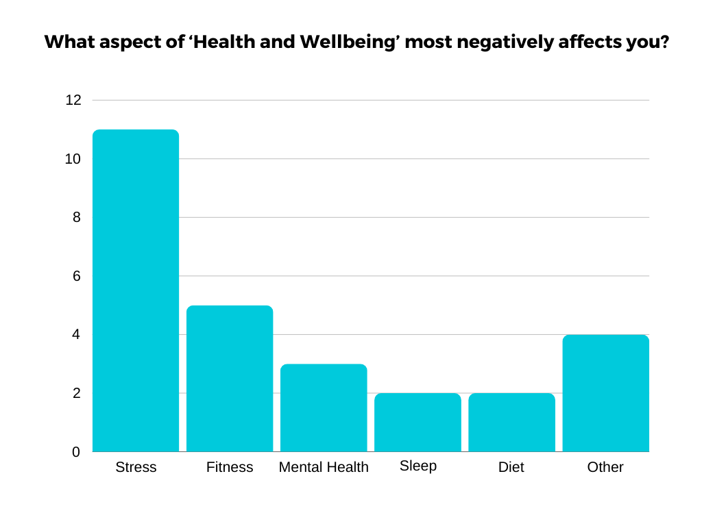
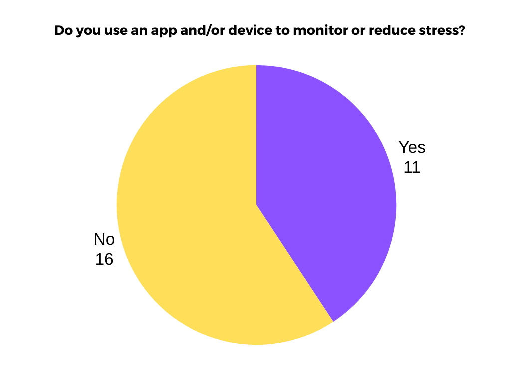
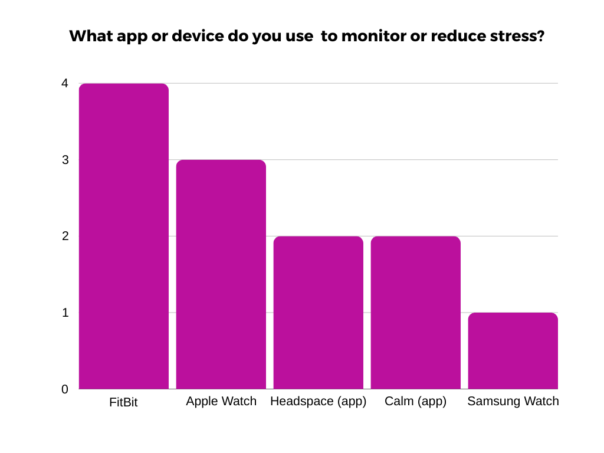

I began my project by researching the different aspects of health and wellbeing that affect people’s
lives that I could create a project from. To do this I brainstormed (right) these aspects and viable
project ideas that could be derived from them. I also conducted short surveys within my
class using a diverse demographic. The surveys focused on students, to investigate the health
and wellness needs of young people today.
I began my project by researching the different aspects of health and wellbeing that affect people’s
lives that I could create a project from. To do this I brainstormed (right) these aspects and viable
project ideas that could be derived from them. I also conducted short surveys within my
class using a diverse demographic. The surveys focused on students, to investigate the health
and wellness needs of young people today.
Between each survey I observed the result and formulated the next survey based on this result.
Survey Results:



From this data I was able to determine the primary needs of end-users and the "pre-existing solutions" to those needs. According to mentalhealth.org.uk, "60% of young people (aged 18 to 24) have felt so stressed by the pressure to succeed that they have felt overwhelmed or unable to cope." This statistic is reflected well through my surveys, therefore, I decided that my project would be based on the topic of stress.
After determining my project's theme, I conducted research on the previously mentioned "pre-existing solutions" and attempted to find a flaw universally within these solutions.

It was clear that the end user’s primary need was a device which could do both while also being easily portable and user-friendly. Subsequently, I decided that for my LCCS project I would attempt to create such a prototype. I began researching into how the watches monitor stress with the intention of replicating it. I found that the primary means to measure stress is the variability of the user's heart rate (aka. The rate of change/slope of the user's heart rate). These watches use a pulse sensor to determine the user's heart rate and subsequently their stress-levels. According to the National Library of Medicine (US), pulse sensors work based on "photoplethysmography" (PPG). PPG works by shining green light into a skin and measuring the blood circulation of the person, based on the amount of light reflected into a photodetector (LDR). This is due to hemoglobin's ability to absorb light, especially green light.